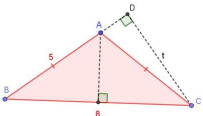
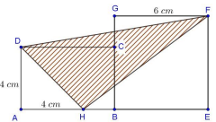
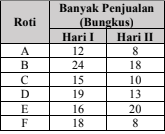
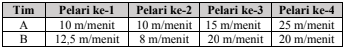
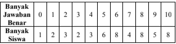

Nama Peserta:
1. Susi mengurutkan bilangan kelipatan 2, Wati bilangan kelipatan 3. Jumlah bilangan ke-25 Susi dan ke-20 Wati adalah ....
2. Hasil dari \( 25 \times (2 + 4) - 10 \div 2 \) adalah ....
3. Nilai dari \( 4^3 - 3^2 \) adalah ....
4. Jika \( \frac{3}{5} \) dari suatu bilangan adalah 36, maka bilangan itu adalah ....
5. Faktor prima dari 144 adalah ....
6. Nilai dari \( 12^2 - 9^2 \) adalah ....
7. Jika suatu segitiga memiliki panjang alas 10 cm dan tinggi 12 cm, maka luas segitiga tersebut adalah ....
8. Nilai dari \( 3^3 + 2^4 \) adalah ....
9. Suatu toko menjual 3 buku tulis seharga Rp7.500,00. Harga 5 buku tulis adalah ....
10. Suku ke-10 dari barisan bilangan 2, 5, 8, 11, ... adalah ....
11. Hasil dari \( \frac{2}{3} + \frac{4}{5} \) adalah ....
12. Jika keliling persegi panjang adalah 36 cm dan panjangnya 10 cm, maka lebarnya adalah ....
13. Hasil dari \( (3 + 2)^2 - (4 \times 2) \) adalah ....
14. Dalam satu kotak terdapat 5 bola merah dan 3 bola biru. Peluang terambil bola biru adalah ....
15. Nilai dari \( 2^4 + 3^3 \) adalah ....
16. Jumlah keliling suatu persegi dan suatu persegi panjang sama dengan tiga kali keliling suatu segitiga sama sisi. Diketahui panjang sisi persegi dan segitiga sama sisi berturut-turut adalah 12 cm dan 10 cm. Jika lebar persegi panjang adalah 9 cm, maka perbandingan lebar dan panjang dari persegi panjang adalah ....
17. Perhatikan gambar segitiga sama kaki ABC berikut.Titik D berada pada garis AB. Panjang t adalah ... satuan panjang.
18. Tabung A memiliki jari-jari sama dengan tingginya, sedangkan tabung B memiliki jari-jari sama dengan \( \frac{3}{4} \) tingginya. Jika jari-jari tabung A sama dengan dua kali jari-jari tabung B, maka perbandingan luas selimut tabung A dan tabung B adalah ....
19. Perhatikan gambar berikut.Jika perbandingan HB : BE = 1 : 3, maka luas daerah yang diarsir adalah ... cm².
20. Hasil ujian matematika di suatu kelas yang terdiri dari 20 siswa berada pada interval 56–100. Rata-rata seluruh siswa di kelas tersebut adalah 68. Sebanyak 3 siswa mengikuti remedial dengan nilai maksimum 75. Rata-rata tertinggi setelah remedial yang mungkin untuk kelas tersebut adalah ....
21. Tabel berikut menunjukkan penjualan roti dalam dua hari:Grafik rata-rata banyak penjualan keenam roti tersebut adalah ....
22. Dua tim siswa sekolah dasar, yaitu tim A dan tim B, berlomba lari estafet 4 × 100 meter. Berikut adalah kecepatan pelari tiap tim:Selisih waktu tempuh kedua tim adalah … detik
23. Berikut ini adalah pemenang pada lomba Chicago Marathon 2023.
Sumber: https://www.kompas.id/baca/riset/2023/10/23/chicago-marathon-2023-merayakan-rekor-baru-dunia
Pada lomba tersebut, jarak yang harus ditempuh adalah 42 km. Kecepatan rata-rata Kelvin Kiptum pada lomba tersebut mendekati … meter/detik.
24. Tabel berikut menunjukkan hasil tes IPA:Berapa minimal banyak jawaban benar sehingga melebihi 70% siswa yang lain?
25. Pada perlombaan panjat pinang, mula-mula Jimmy memanjat sejauh \( \frac{2}{5} \) dari tinggi batang pinang, namun kemudian Jimmy merosot ke posisi \( \frac{1}{4} \) dari posisi sebelumnya. Selanjutnya, Jimmy memanjat kembali tepat \( \frac{1}{5} \) dari posisi terakhir. Jika Jimmy harus memanjat 6 meter lagi untuk sampai di puncak, maka tinggi batang pinang adalah ....